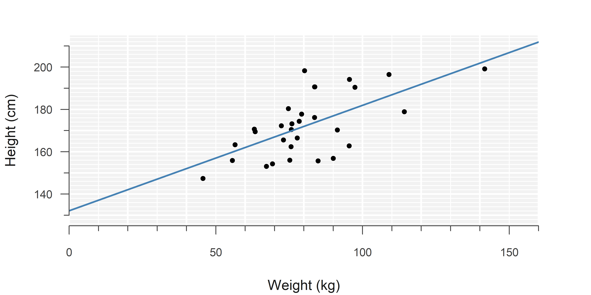
1 Simple Linear Regression
Linear regression with a single explanatory variable.
1.1 Lecture
1.2 Summary
Mathematical formula:
\[\begin{align} y &= \beta_0 + \beta_1 \cdot x + \epsilon \\ \tag{1}\label{slm}\\ \epsilon &\sim \mathcal{N}(0, \, \sigma^2) \end{align}\]Code:
model <- lm(y ~ x, data)import statsmodels.api as sm
model = sm.OLS(y, x).fit()Note: You have to include an intercept manually using x = sm.add_constant(x).
Definitions
- response variable
-
The outcome, denoted by \(y\).
-
\(\hat{y}\) is the predicted outcome by the model, also called the ‘fitted value.’
- explanatory variable
-
The variable the outcome is regressed on, denoted by \(x\).
- intercept
-
Value of the outcome (\(y\)), when the explanatory variable (\(x\)) is zero.
-
\(\beta_0\) is the theoretical value.
-
\(\hat{\beta}_0\) is its estimate.
- slope
-
Change in the outcome (\(y\)), when the explanatory variable (\(x\)) increases by one.
-
\(\beta_1\) is the theoretical value.
-
\(\hat{\beta}_1\) is its estimate.
- error
-
Difference between the true population values of the outcome and those predicted by the true model.
-
\(\epsilon\) is the true error.
- residual
-
Difference between the sample values of the outcome and those predicted by the estimated model.
-
\(\hat{\epsilon}\) is sometimes used to denote the residual, an ‘estimate’ of the error.
- normal distribution
-
See Normal Distribution.
-
\(\epsilon \sim \mathcal{N}(0, \, \sigma^2)\) means: The error follows a normal distribution with mean \(0\) and variance \(\sigma^2\) (some unknown variance).
Explanation
Simple linear regression models the relationship between two continuous1 variables, using an intercept and a slope:
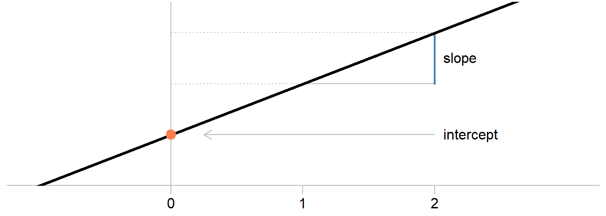
As you can see in figure Figure 1.1, a model is only an approximation and there will always be individual differences from the ‘average’ trend that has been estimated. These differences are called the residuals:
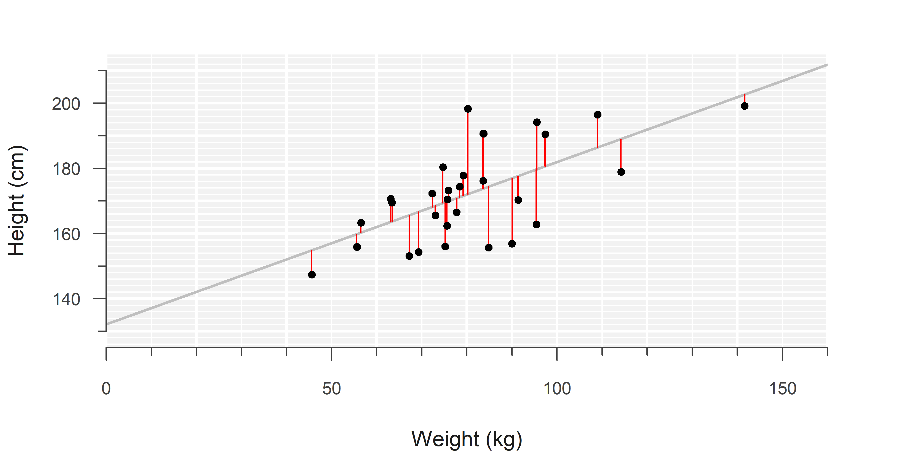
The intercept and slope are estimated by minimizing the sum of squared residuals, a technique called ordinary least squares.2
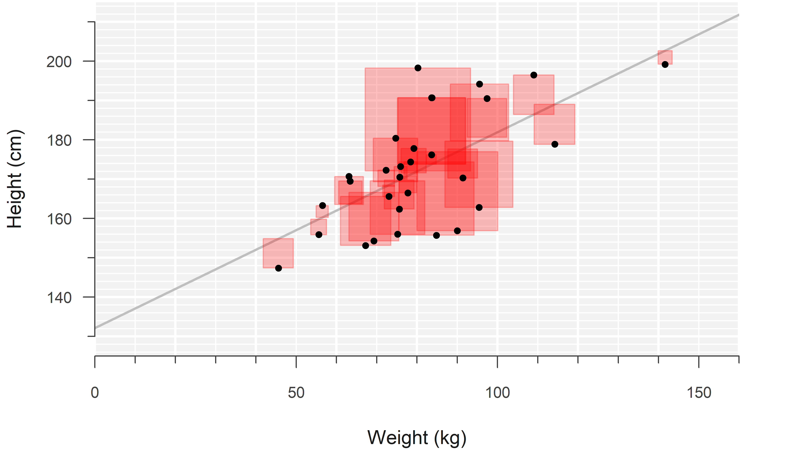
The results of a linear regression are summarized in a regression table, which provides insight into the parameter estimates, their uncertainty, and some basic measures of how well the model fits the data:
DF <- read.csv("data/example_data_simple_linear_regression.csv")
LM <- lm(weight ~ height, data = DF)
summary(LM)
Call:
lm(formula = weight ~ height, data = DF)
Residuals:
Min 1Q Median 3Q Max
-21.486 -11.962 -2.670 6.326 39.192
Coefficients:
Estimate Std. Error t value Pr(>|t|)
(Intercept) -57.4496 32.1694 -1.786 0.084960 .
height 0.8025 0.1859 4.318 0.000178 ***
---
Signif. codes: 0 '***' 0.001 '**' 0.01 '*' 0.05 '.' 0.1 ' ' 1
Residual standard error: 14.82 on 28 degrees of freedom
Multiple R-squared: 0.3997, Adjusted R-squared: 0.3783
F-statistic: 18.64 on 1 and 28 DF, p-value: 0.0001783import pandas as pd
import statsmodels.api as sm
DF = pd.read_csv("data/example_data_simple_linear_regression.csv")
LM = sm.OLS(DF['height'], sm.add_constant(DF['weight'])).fit()
print(LM.summary2()) Results: Ordinary least squares
=================================================================
Model: OLS Adj. R-squared: 0.378
Dependent Variable: height AIC: 234.5127
Date: 2023-09-03 17:57 BIC: 237.3151
No. Observations: 30 Log-Likelihood: -115.26
Df Model: 1 F-statistic: 18.64
Df Residuals: 28 Prob (F-statistic): 0.000178
R-squared: 0.400 Scale: 136.30
------------------------------------------------------------------
Coef. Std.Err. t P>|t| [0.025 0.975]
------------------------------------------------------------------
const 132.1493 9.5791 13.7955 0.0000 112.5273 151.7712
weight 0.4981 0.1154 4.3178 0.0002 0.2618 0.7344
-----------------------------------------------------------------
Omnibus: 0.339 Durbin-Watson: 2.521
Prob(Omnibus): 0.844 Jarque-Bera (JB): 0.508
Skew: 0.156 Prob(JB): 0.776
Kurtosis: 2.444 Condition No.: 373
=================================================================
Notes:
[1] Standard Errors assume that the covariance matrix of the
errors is correctly specified.A simple linear model makes several key assumptions which are required for valid inference:
- The observations are independent.
- The relationship between the outcome and the explanatory variable is linear.
- The error follows a normal distribution.
- The error has a constant variance along the regression line.
And while not really an assumption, also important:
- There are no influential outliers with unreasonably large influence on the estimates.
Independent measurements must be apparent from the study design. The rest can be checked through visual diagnostics. A quick visual summary of what each plot is used for:
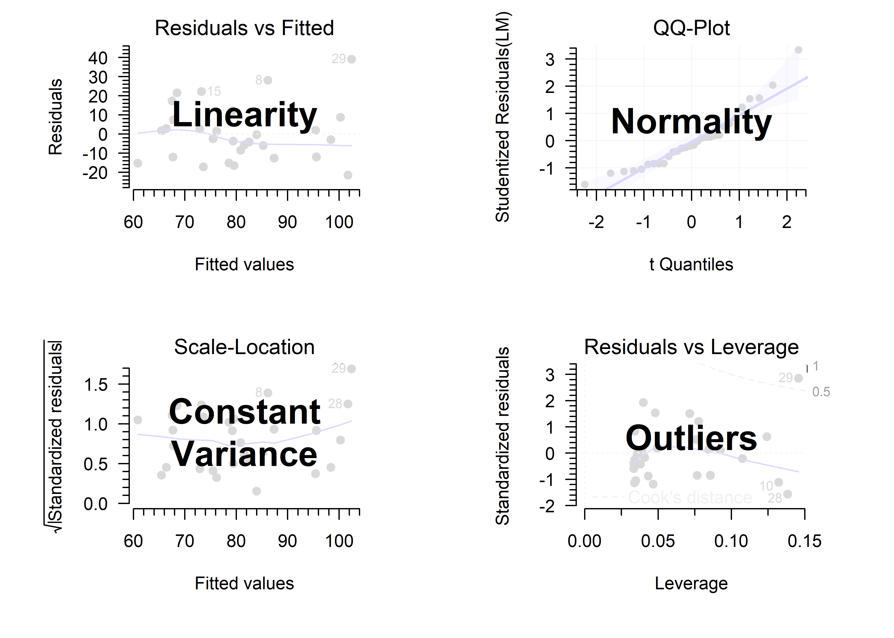
Example
This is example uses the iris data set. To use your own data, have a look here ).
Suppose we want to estimate the relationship between the length of a flower sepals and the width of its petals. We’ll consider sepal length to be the outcome in this example.
- Plot the data
plot(Sepal.Length ~ Petal.Width, iris,
bty = "n", pch = 19, las = 1,
xlab = "Petal width (mm)",
ylab = "Sepal length (mm)")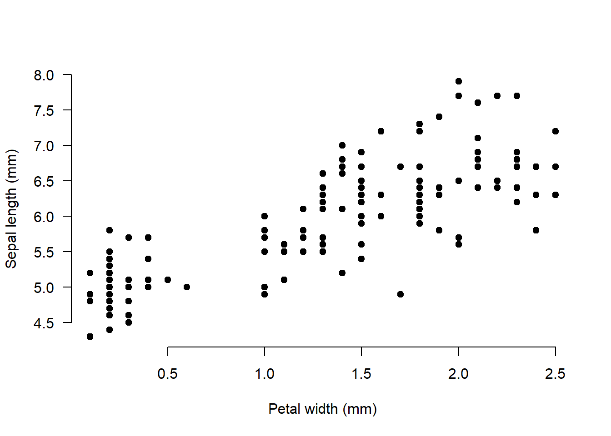
(To change the aesthetics, search for options online, or in the help files of plot and par.)
There appears to be a positive correlation between the two variables: Flowers with wider petals have longer sepals, on average.
- Fit the model (this does not print any output)
LM <- lm(Sepal.Length ~ Petal.Width, iris)- What are the estimated intercept and slope?
coef(LM)(Intercept) Petal.Width
4.7776294 0.8885803 In this case, \(\hat{\beta}_0 = 4.8\) and \(\hat{\beta}_1 = 0.9\). So a flower with 1 mm wider petals, has on average 0.9 mm longer sepals.
- Perform visual diagnostics
require("car") # Install if missing
par(mfrow = c(2, 2)) # Plot in a 2x2 grid
plot(LM, which = 1) # Residuals vs fitted
qqPlot(LM, reps = 1e4) # QQ-plot
plot(LM, which = 3) # Scale-location
plot(LM, which = 5) # Residuals vs leverage
par(mfrow = c(1, 1)) # Restore the default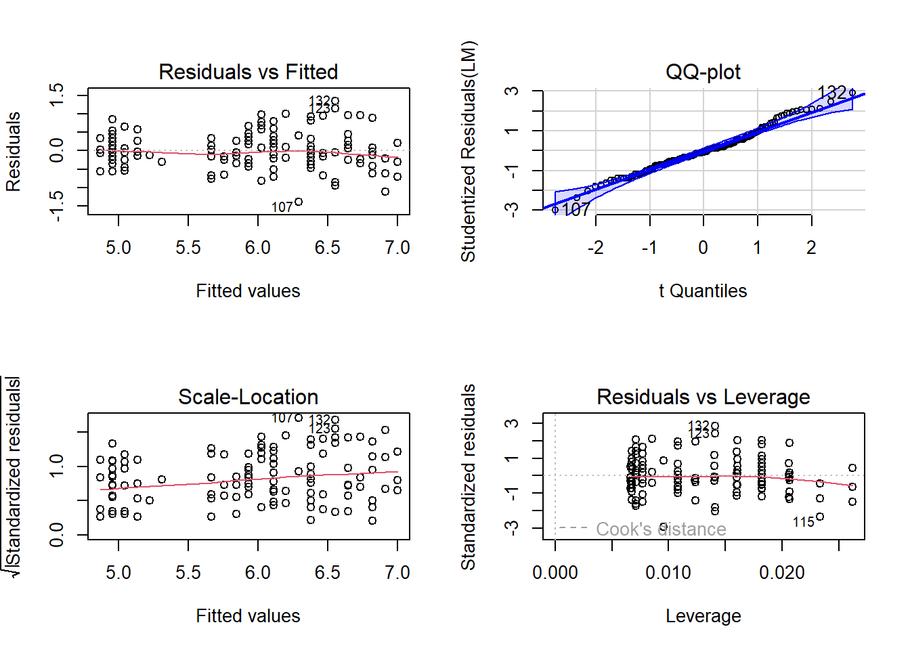
- Residuals vs fitted: There is no non-linear pattern at all. The red smoothing line is as good as flat.
- QQ-plot: The residuals quite closely follow the line representing a true normal distribution. There is a wiggle near the top right, but I would not find this cause for concern.3
- Scale-location: The variance increases along the regression line, indicated by the clear upward trend. However, from the \(y\)-axis, we can see that this increase is small (\(<0.5\)) and no cause for concern.4
- Residuals vs leverage: The boundaries for the Cook’s distance are not even visible in the plot, so there are no outliers.
In conclusion, no serious problems are revealed.
- Print a regression table
summary(LM)
Call:
lm(formula = Sepal.Length ~ Petal.Width, data = iris)
Residuals:
Min 1Q Median 3Q Max
-1.38822 -0.29358 -0.04393 0.26429 1.34521
Coefficients:
Estimate Std. Error t value Pr(>|t|)
(Intercept) 4.77763 0.07293 65.51 <2e-16 ***
Petal.Width 0.88858 0.05137 17.30 <2e-16 ***
---
Signif. codes: 0 '***' 0.001 '**' 0.01 '*' 0.05 '.' 0.1 ' ' 1
Residual standard error: 0.478 on 148 degrees of freedom
Multiple R-squared: 0.669, Adjusted R-squared: 0.6668
F-statistic: 299.2 on 1 and 148 DF, p-value: < 2.2e-16There is a significant relationship between petal width and sepal length (\(\hat{\beta} = 0.889\), \(p < 2 \cdot 10^{-16}\)). This model explains 66.9% of the variance in sepal length.
The model can be plotted as explained in the video.
…
1.3 Quiz
Which of the following is implicitly assumed in simple linear regression? (choose one)
A. The data are normally distributed
B. The outcome is normally distributed
C. The residuals are normally distributed
D. The response variable is normally distributed
Hint
See equation \(\eqref{slm}\).
Which of the following is implicitly assumed in simple linear regression? (choose one)
A. The data are normally distributed
B. The outcome is normally distributed
C. The residuals are normally distributed
D. The response variable is normally distributed
Learn why
The normality assumption is about the error, the vertical distances along the regression line. Our ‘estimate’ of the error is called the residual.
Simple linear regression makes no assumptions about your entire data set, nor your outcome variable. Response variable is just a synonym for outcome.
Another correct way to phrase the assumption is that the outcome is conditionally normally distributed. The condition here is the value of the explanatory variable. Namely, we can rewrite equation \(\eqref{slm}\) as follows:
\[\begin{align} y \sim \mathcal{N}(\beta_0 + \beta_1 \cdot x, \, \sigma^2) \end{align}\]This says: “The outcome follows a normal distribution with a mean that depends on the value of \(x\).”
Don’t worry if you do not fully understand this yet, as it will be covered at length in the next chapter.
In the context of simple linear regression, a confidence interval shows:
A. Where to expect current observations
B. Where to expect future observations
C. A plausible range of values for the intercept and slope
D. A 95% confidence interval has a 95% chance to contain the true value for the intercept and slope
Hint
This is mentioned in the first video , and more thoroughly explained in a separate video:
In the context of simple linear regression, a confidence interval shows:
A. Where to expect current observations
B. Where to expect future observations
C. A plausible range of values for the intercept and slope
D. A 95% confidence interval has a 95% chance to contain the true intercept/slope
Learn why
A. You don’t need an interval for this, just look at the observations.
B. This is the interpretation of a prediction interval.
C. This is a loose interpretation of a confidence interval, I recommend using.5
D. This is the interpretation of a Bayesian credible interval.
For a more in depth explanation, please refer to the video:
Below is the output of a simple linear model:
Estimate Std. Error t value Pr(>|t|)
(Intercept) 4.817080 0.3375541 14.270542 5.668035e-07
x -2.016138 0.4487337 -4.492949 2.020849e-03Which of the following best represents the model?
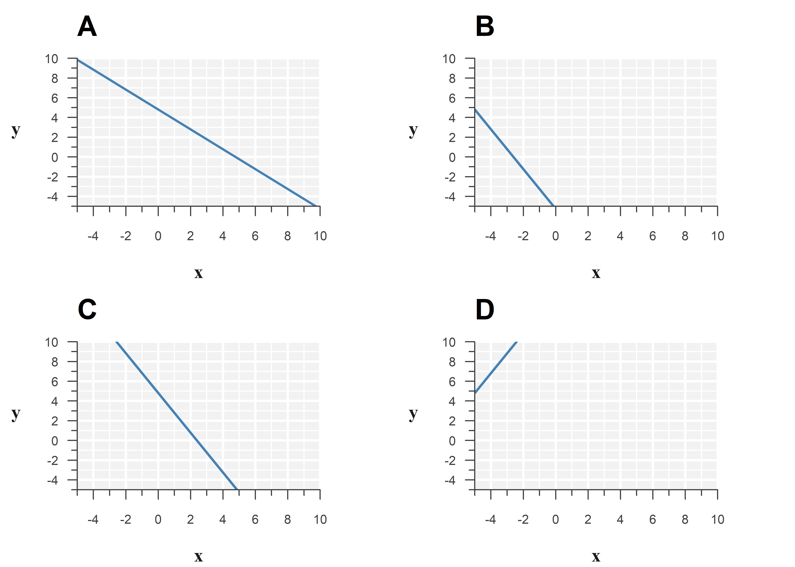
Hint
Look at the Estimate column.
Below is the output of a simple linear model:
Estimate Std. Error t value Pr(>|t|)
(Intercept) 4.817080 0.3375541 14.270542 5.668035e-07
x -2.016138 0.4487337 -4.492949 2.020849e-03Option C best represents the model:
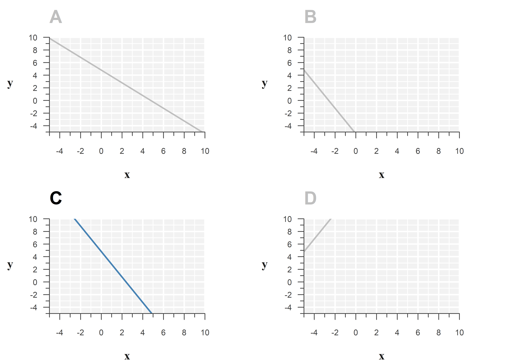
Learn why
Filling in the estimates, the fitted model is:
\[\begin{align} \hat{y} = \texttt{4.817} + \texttt{-2.016} \cdot x \end{align}\]The estimated slope is about -2, so the line should go down by 2 for every unit increase in \(x\).
The intercept is the value of the outcome, if we set the explanatory variable to zero. You may have learned before that the intercept is where you ‘cross the \(y\)-axis,’ but the figures are (intentionally) misleading to teach you an important nuance: The \(y\)-axis does not have to start at \(0\).
Below is the same figure, with a vertical line drawn at \(x=0\):
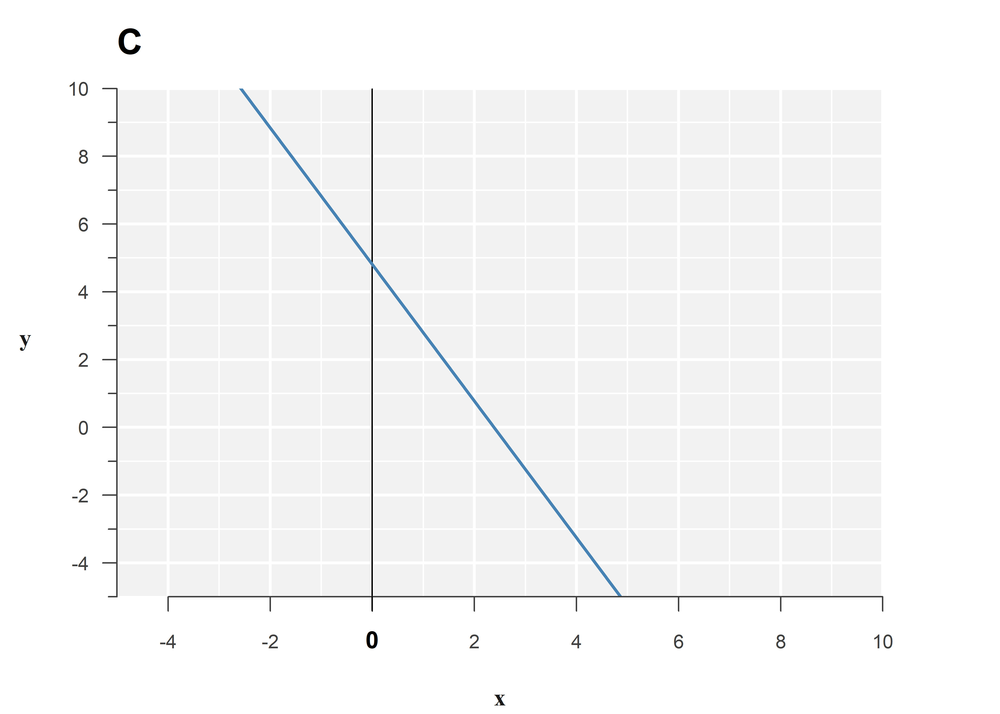
Continuing on question 3, below is another part of the output of this model:
Residual standard error: 1.051 on 8 degrees of freedom
Multiple R-squared: 0.7162, Adjusted R-squared: 0.6807
F-statistic: 20.19 on 1 and 8 DF, p-value: 0.002021Answer the following questions:
- This model explains a significant/non-significant part of the variance in the outcome.
- This model explains …% of the variance in the outcome.
- The original sample size was … and the model uses … degrees of freedom.
- The residuals have a standard deviation of ….
Hint
This is explained in the third video .
Continuing on question 3, below is another part of the output of the model:
Residual standard error: 1.051 on 8 degrees of freedom
Multiple R-squared: 0.7162, Adjusted R-squared: 0.6807
F-statistic: 20.19 on 1 and 8 DF, p-value: 0.002021Answer the following questions:
- This model explains a significant/non-significant part of the variance in the outcome.
- This model explains 71.6% of the variance in the outcome.
- The original sample size was 10 and the model uses 2 degrees of freedom.
- The residuals have a standard deviation of 1.05.
Learn why
- The \(F\)-test at the bottom compares the original spread in the outcome to the spread that remains around the regression line after fitting the model (i.e. the residual variance). Its \(p\)-value is \(0.002\), which would be considered significant at most commonly used levels of significance, like \(\alpha = 0.05\), or \(\alpha = 0.01\).
- Variance explained is the interpretation of \(R^2\).
- The residual degrees of freedom are
8according to the output. A simple linear model consists of an intercept and a slope, so the model uses 2 degrees of freedom. That means the original sample size was \(8 + 2 = 10\). - The spread around the regression line is printed with the incorrect wording
residual standard error: 1.051, as mentioned in the video. It should actually sayresidual standard deviation: 1.051.
Below are some diagnostic plots for the model fitted above. Explain what each plot is for and comment on the results:
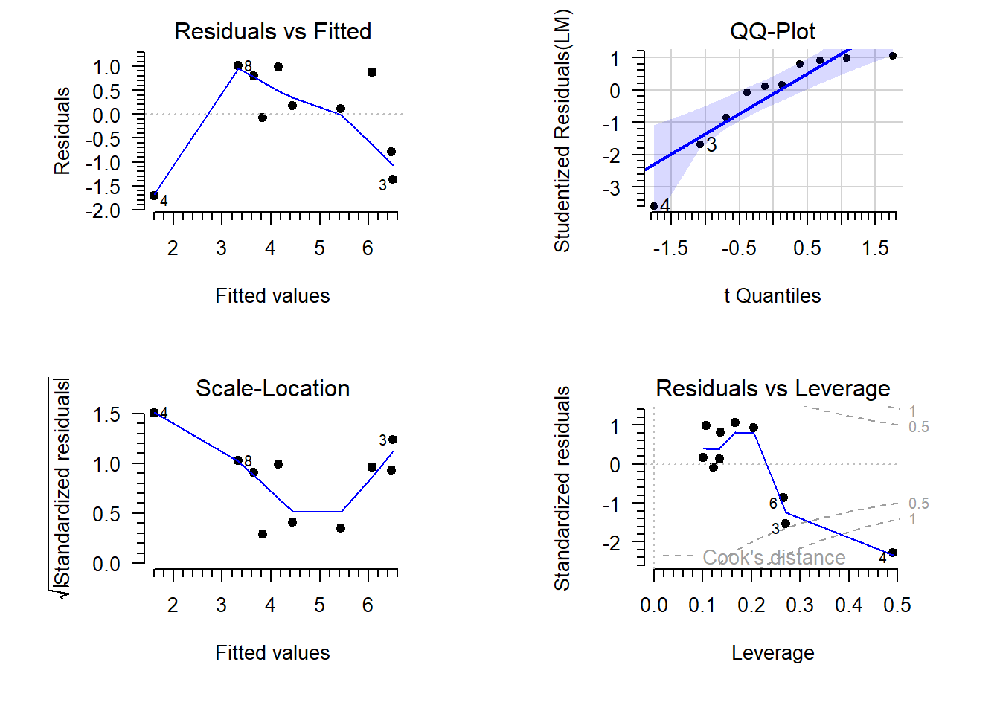
- The residuals vs fitted plot is used to assess the assumption of …. In this case it shows ….
- The QQ-plot is used to assess the assumptions of …. In this case it shows ….
- The scale-location plot is used to assess the assumption of …. In this case it shows ….
- The residuals vs leverage plot is used to assess …. In this case it shows ….
Based on these diagnostic plots, I conclude ….
Hint
This is covered in the fourth video .
Below are some diagnostic plots for the model fitted above. Explain what each plot is for and comment on the results:
- The residuals vs fitted plot is used to assess the assumption of linearity. In this case it shows a non-linear pattern, although that can be attributed to a single observation (4).
- The QQ-plot is used to assess the assumptions of normality. In this case it shows left skew, indicated by the convex shape. However, the deviation from normality is within what is acceptable, according to the confidence band.
- The scale-location plot is used to assess the assumption of constant variance. In this case it shows no consistent upward or downward trend in the variance along the regression line.
- The residuals vs leverage plot is used to assess the presence and influence of outliers. In this case it shows a single outlying observation with high leverage (4).
Based on these diagnostic plots, I conclude observation 4 has a large influence on the parameter estimates and must be checked for validity.
Learn why
…
Continuous can take on any value within a range, like \(1,\, 1.01,\, 1.001,\, \dots\)
Discrete can only take on certain values, like \(1,\, 2,\, 3,\, \dots\)↩︎It is called ordinary in contrast to the many adaptation that exist, like weighted least squares, partial least squares, etc.↩︎
If you are in doubt, you can use a test for deviation from normality:
shapiro.test(resid(LM)) # Shapiro-Wilks testShapiro-Wilk normality test data: resid(LM) W = 0.98653, p-value = 0.1543With \(p = 0.154\), no significant deviation from normality was detected.↩︎
If you are in doubt, you can use a test for deviation from constant variance:
library("lmtest") bptest(LM) # Breusch-Pagan teststudentized Breusch-Pagan test data: LM BP = 12.357, df = 1, p-value = 0.0004393With \(p = 0.00044\), significant non-constant variance was detected. However, from the scale-location plot we saw that the magnitude of the non-constant variance was too small to be of concern.↩︎
Purists may object to this definition, but as shown in the end of the video on confidence intervals, this interpretation is often very reasonable for the types of models you will learn about in this course.↩︎